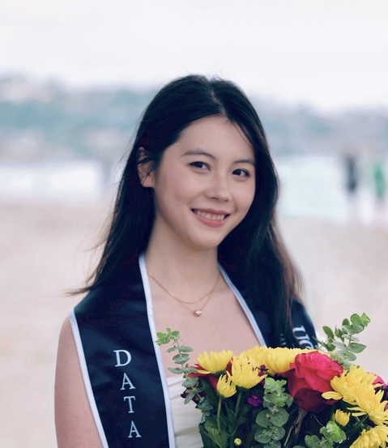

Experience & education
Professional Summary

Yuxuan (Kate) Zhou
Computer science master's student at the University of Southern California, with a background in data science and general biology.
Education
University of Southern California, M.S.
Major: Computer Science
University of California San Diego, B.S.
Major: Data Science
Minor: General Biology
Skills & Abilities
- Proficient in Python, JAVA, Dart, JavaScript, SQL, and R.
- Strong understanding of Object-Oriented Programming, data structures, algorithms, data mining, databases, and data management.
- Expertise with data analysis and visualization using Pandas, NumPy, Pytorch, sklearn, Matplotlib, Seaborn, D3, ggplot.
- Knowledge of statistics, probability, machine learning, deep learning, artificial intelligence (AI), and computer vision.
- Fundamental understanding of cellular and molecular biology, genetics, and physiology, and experience in bioinformatics.
- Skilled in Adobe Creative Suite (Photoshop, Illustrator, InDesign, After Effects, Premiere Pro) and Figma.
- Expert in illustration, character design, poster design, and graphic design.
- Proficient in Mandarin and familiar with Japanese.
- Long-term experience in teaching and tutoring.
Professional Experience
Eden Lab LLC, Software Engineer Intern
- Built object-oriented Dart systems for game asset processing, including icon resizing and PNG outline generation. Developed position-based task assignment logic for pawns using structured data models and efficient lookup methods.
IDX Exchange, Data Scientist Intern
- Working in a group of 6 to build machine learning models to predict California home prices. Our models will be deployed in products for future clients.
- Responsible for data cleaning and processing, missing value imputations, and model training/tuning. Evaluate and present the final Ensemble models that achieve an MAPE of 16.63% and R2 of 0.8.
Halıcıoğlu Data Science Institute, Data Science Tutor
- Lead office hours to clarify lecture content (Including time complexity, recursion, object-oriented programming, data structure, etc.) and troubleshoot coding challenges for more than 300 students.
- Grading assignments and exams, ensuring accurate assessment and feedback.
Art Teacher Assistant
- Assisted art teachers in delivering lessons and preparing class materials.
- Taught students in groups of 15.
Research
Jinich Lab
- Work in a group of four to create FitnessMap that identify co-essential gene pairs across bacteria using functional genomics and structural modeling.
Research Assistant
- Assisted in instructing eye-tracking experiments and collecting pupil data.
ESB AI Lab
- Collaborated in a large language model research group on automated PDF mining.
- Developed an algorithm to extract structured data (tables, graphs, etc.) from non-textual elements.
Extracurricular Activities
USC ACM Hackathon
- Engineered a full-stack carpooling platform, CampusLoop, to solve the spatiotemporal ride-matching problem, connecting student riders and drivers based on geographic proximity, overlapping routes, departure-time compatibility, and available vehicle capacity.
Mindshifts on Megafires Design-A-Thon
- Work in a team of five within 48 hours to create a proposal for an app, FireScan, that utilizes camerascan and satellite images to evaluate household fire safety with computer vision, and won 2nd place.
Institute of Electrical and Electronics Engineers (IEEE) - Graphics Design Chair
- Planned and conducted design competitions.
- Designed promotional materials for club events and managed social media content.
Data Science Student Society (DS3) - Design Subcommittee
- Designed and created illustrations for club posters. Managed social media content to promote the club.
- Participated in a data science group project.
Fusheng Theatre Troupe/Chinese Drama Club at UCSD - Actress/Artist
- Acted in 2023/2024 spring shows.
- Designed posters and illustrations for new shows.
- Created social media posts to promote new shows.